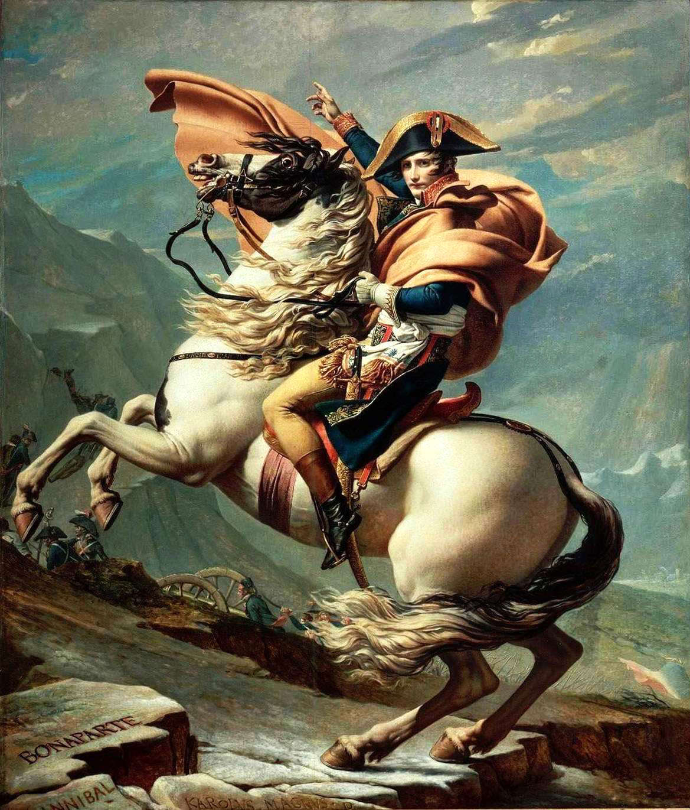
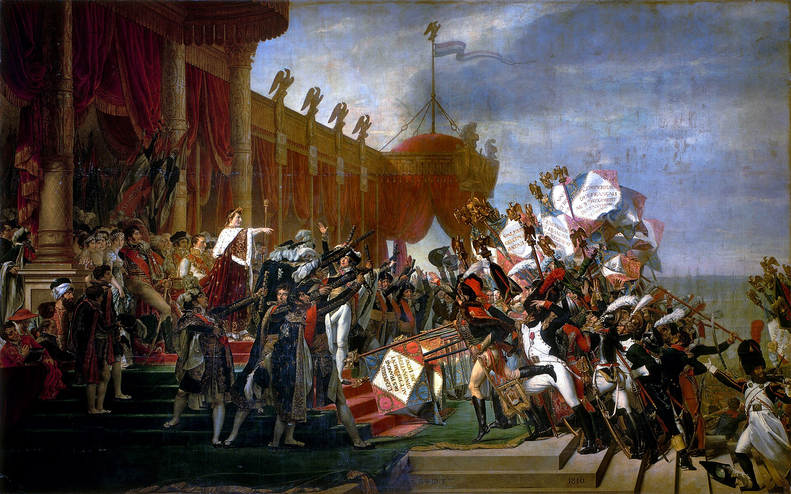
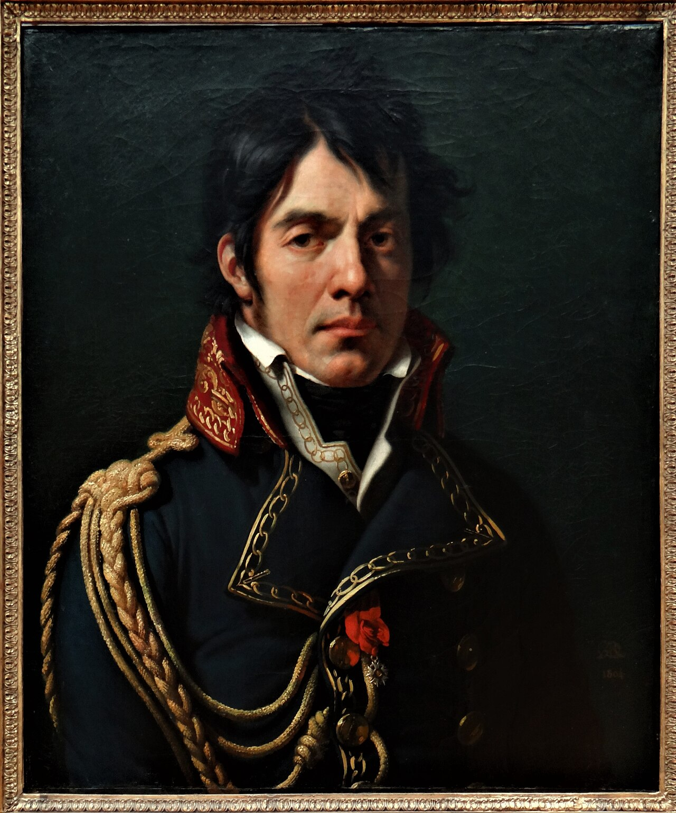

Napoleon Bonaparte fought, by his own count, some sixty battles ("I have fought sixty battles," he said in exile, "and I have learnt nothing which I did not know at the beginning") and lost fewer than a handful until the very end. Popular memory files this under genius, as if the victories fell out of a single brilliant head. They did not. Napoleon's way of war was a system, most of its parts invented by other men before him, which he assembled, drilled, and drove with a relentlessness his opponents could not match for fifteen years. The system had a shape you can describe, a set of standing methods you can name, and a human organization you can diagram. Understanding it is worth the effort, because it is one of history's clearest lessons in what happens when a capable operator takes a pile of good but disconnected reforms and forges them into a doctrine.

Napoleon took command of an instrument that the Old Regime and the Revolution had already half-built. Three inheritances mattered most. First, the Gribeauval artillery system: in the 1760s and 1770s General Jean-Baptiste de Gribeauval had standardized French cannon into a small number of calibers with interchangeable parts, lighter carriages, and faster laying, giving France the best field artillery in Europe. Napoleon was himself a trained artillery officer, and this was the arm he understood in his bones. Second, the theoretical revolution of the 1770s and 1780s, above all the writings of the Comte de Guibert, who argued for mobile war, living off the land, national armies, and the concentration of force, ideas Napoleon executed almost to the letter. Third, the Revolution itself, which through the levée en masse of 1793 produced mass conscript armies and, by throwing out the aristocratic officer corps, opened promotion to talent. Napoleon did not invent the citizen army, the modern gun, or the doctrine of mobility. He inherited all three and was the first to run them together at full speed.
Two Revolutionary mechanisms built the army's human core. The first was the amalgame: by a decree of February 1793, on the proposal of Edmond Dubois-Crancé, the Convention merged the old white-coated royal line army with the blue-coated National Volunteers, forming each new demi-brigade from one regular battalion and two volunteer battalions under a single pay scale, uniform, and discipline code, so that raw recruits learned the trade by daily contact with veterans. Napoleon renamed the demi-brigades regiments in 1803, but the blended DNA persisted. The second was conscription made routine: the Jourdan Law of 1798 made all single men aged twenty to twenty-five liable for service in annual classes drawn by lottery, and more than 2.4 million Frenchmen were drafted between 1800 and 1813. The machine had a manpower pipeline no enemy could match.
The organizational core of the whole system was the army corps, which Napoleon standardized after 1800. A corps was a miniature army of roughly twenty to thirty thousand men, though sizes varied widely in practice, complete in itself: several infantry divisions, its own cavalry, its own artillery, its own engineers and staff and supply train. Because each corps was self-sufficient, it could operate alone for a day or more and, crucially, could hold off a much larger enemy force by itself until help arrived; no corps was supposed to be more than about a day's march, fifteen to twenty miles, from a neighbor. This one design decision unlocked everything else. An army built of corps could march spread out across a wide front, along many roads at once, foraging as it went, and then concentrate rapidly at the decisive point. The doctrine was summarized in a phrase every French officer understood: march dispersed, fight concentrated. When one corps found the enemy, the others marched to the sound of the guns. The corps system is Napoleon's single most durable contribution to the art of war, and every modern army is still organized on its logic.
The proof came in the autumn of 1805, when about 210,000 men in seven corps swept from the Channel coast to the Danube, some units covering twenty miles a day; Chandler describes the whole army pivoting toward the river "like a door swinging on its hinges." While Murat demonstrated in the Black Forest, where the Austrian commander Mack expected the blow, the corps arced down to the Danube east of Ulm and cut Mack's communications to Vienna. Enveloped before his Russian allies could arrive, Mack capitulated on October 20 with roughly 25,000 to 27,000 men at Ulm itself; the whole campaign cost Austria some 60,000 prisoners against about 6,000 French casualties, with no major pitched battle at all. A captured Austrian officer is traditionally said to have complained that Napoleon made war with their legs. The campaign was decided by marching.
On campaign, Napoleon often arranged his corps in a formation historians call the bataillon carré, the battalion square, though it was an army of corps, not a battalion. The corps were spaced a day's march from one another in a rough diamond or square, so that whichever direction the enemy appeared from, the leading corps could pin him while the others wheeled to concentrate. The square could face any way without reorganizing; it was an army that had no undefended flank because it had no fixed front. This is the deep meaning of Napoleonic speed. It was not just that his men marched fast, though they did; the deeper advantage was that the formation let him keep his options open until the last moment and then collapse the whole force onto the enemy from an unexpected direction before the enemy could respond.
Napoleon's operations resolved, again and again, into one of two strategic moves. The first was the manoeuvre sur les derrières, the maneuver onto the rear. Rather than attack the enemy head-on, Napoleon would pin him in front with a fraction of his force, then swing the mass of the army around a flank and onto the enemy's line of communication, the roads carrying his supply and his retreat. Cut off from his base and threatened from behind, the enemy had to turn and fight at a disadvantage or be destroyed piecemeal. He used this maneuver roughly thirty times between 1796 and 1815, by Chandler's count. The second move was the strategy of the central position, for when he was outnumbered by two converging enemies. He would drive his army into the gap between them, throw the bulk of his force against one before the other could arrive, beat it, then turn and deal with the second. Keep the enemies apart, defeat them one at a time: it is how he opened the 1796 Italian campaign and how he tried, and nearly managed, to win at Waterloo.
The system ran on an appetite for work the men around him found barely believable. "I have constantly worked 16 hours a day ever since leaving military school," Napoleon told his secretary Méneval. The legend that he barely slept is overstated; his secretary Bourrienne recorded about seven hours out of the twenty-four, taken in pieces: retire early, rise after midnight to work, back to bed before dawn. Méneval preserved the standing order, "Be here tonight, at one o'clock, or at four in the morning; we will work together," and at those sessions the Emperor appeared in a white dressing gown with a Madras handkerchief round his head. His handwriting was nearly illegible, so he dictated instead, often to several secretaries at once on different subjects, pacing and talking faster as a subject caught fire.
He treated meals as an interruption. Bourrienne wrote that his household was arranged so that "in all places and at all hours, chicken, cutlets, and coffee might be forthcoming at a word"; in the Tuileries kitchens chickens turned on spits in relays, and his valet Saint-Denis put most meals at fifteen or twenty minutes. The office traveled with him: the sleeping carriage he ordered for the Russian campaign carried a sliding writing desk, drawers of maps and reports, a folding iron camp bed, and a lamp rigged so he could work through the night on the road. His secretary Baron Fain called it a mobile home.
At the center of headquarters stood the map table. Louis Bacler d'Albe, chief of Napoleon's personal topographical bureau from 1804, kept the campaign maps glued on linen and studded with colored pins marking French and enemy units; the sheets were so large that the two men would climb onto the table to work over them and occasionally knock heads. Turning the resulting decisions into marching orders was the work of Louis-Alexandre Berthier, chief of staff from Italy in 1796 to the first abdication in 1814, one of the few men who could read the Emperor's handwriting and less a planner than a transmission mechanism of genius. He converted dictated intent into complete written orders, routes, timings, rations, for every corps, the copies dispatched by relays of couriers; when Napoleon, on 25 August 1805, learned that Villeneuve had failed him in the Channel and dictated in a matter of hours the dispositions that swung the whole army from Boulogne to the Rhine, it was Berthier's bureau that turned them into complete orders for every corps, and he was famously available at any hour of the night.
On the battlefield the pieces combined in a recognizable sequence. Skirmishers, the light infantry called tirailleurs, went forward in loose swarms to harass and disorder the enemy line, a role the rigid armies of Prussia and Austria found hard to answer. Behind them the infantry deployed in the ordre mixte, the mixed order, a French innovation that combined the firepower of the long thin line with the shock and momentum of the deep assault column, some battalions in line to shoot, others in column to punch. The artillery, massed into a grand battery of dozens of guns, was concentrated against a single stretch of the enemy line to blow a hole in it. The cavalry waited to exploit that hole, to break disordered infantry, and to turn a defeat into a rout by pursuit. And behind everything stood the reserve, above all the Imperial Guard, the elite veteran corps Napoleon held back until the decisive instant and then committed to finish the battle. The principle underneath all of it was concentration: mass overwhelming force at one point, the point where the enemy would break, and accept economy of force everywhere else.
The artillery deserves a closer look, because the gunner-emperor leaned on it more heavily as the wars wore on. In 1800 French armies deployed about two guns per thousand soldiers; by 1812, as infantry quality declined under years of conscription, the ratio approached five per thousand. He called his Gribeauval 12-pounders his belles filles, his beautiful daughters, and the late-Empire signature was to run massed batteries forward into canister range and blow away whole sections of the enemy line: at Wagram in 1809 Lauriston massed roughly a hundred guns, 102 to 112 in various counts, to cover Masséna's redeployment and MacDonald's attack. The infantry moved to regulation cadences, an ordinary step of 75 or 76 paces to the minute rising to a charge step of roughly 120 per the 1791 regulations, the drums beating the pas de charge as the columns went in.
The battle of Austerlitz, December 2, 1805, is the whole doctrine compressed into a single day. Outnumbered, Napoleon deliberately made his right wing look weak and invited the larger Austro-Russian army to attack it and roll up his flank. As the allies fed their center down off the high ground called the Pratzen Heights to pile onto his right, Napoleon launched a concealed corps straight up into the emptied center, split the allied army in two, and then destroyed each half in turn. It was the central-position idea and the concentration principle executed at the tactical scale, married to a piece of deception that worked because the enemy assumed a weak-looking flank was a real weakness rather than bait. Three emperors were on the field. Napoleon's army was the smallest and it won the most complete victory of the age.
Two scenes from the hours before the fighting show the system's reach. The weak right was only safe to offer as bait because Davout's III Corps was force-marching to thicken it, covering nearly seventy miles in forty-eight hours from around Vienna; the next morning his leading 12,500 men pinned more than 40,000 allies along the Goldbach stream while Soult stormed the Pratzen. The night before, the first anniversary of the coronation, Napoleon walked the bivouacs; a soldier tied lit straw to his bayonet as a torch, the gesture spread, and soon miles of camp blazed as the army cheered him down the line. "This is the most beautiful evening of my life," he is reported to have said, "but I regret to think that I shall lose a good number of these fine men." Allied scouts misread the glow as fires covering a retreat.
None of the maneuvers meant anything without the legs to execute them, and Napoleon's soldiers marched at a rate that repeatedly caught professional armies flat-footed. The enabling decision was logistical: French armies largely abandoned the slow supply-magazine system of the eighteenth century and lived off the country, requisitioning food from the land they crossed. This freed them from the tether of supply convoys and let them move light and fast, though it also meant that in poor or hostile country, Spain and above all Russia, the system starved. The famous line, that an army marches on its stomach, is a traditional attribution, but it is Napoleon's own point turned into proverb. Speed was a weapon: he counted on covering ground faster than the enemy could react, arriving with concentrated force before a dispersed opponent could gather, and forcing battle on his terms. "I may lose a battle," runs a line attributed to him, "but I shall never lose a minute." What is documented beyond doubt is the injunction he scrawled on an 1809 order to Masséna: "Activité, activité, vitesse!" Activity, activity, speed.
The numbers behind the reputation are concrete. Eighteenth-century armies averaged something like ten to fifteen miles a day; Napoleonic corps, stripped of the great baggage trains, made fifteen miles a routine day and could reach thirty in exceptional circumstances. That margin is what bagged an Austrian army at Ulm without a battle.
10-15 miles A normal day's march for an eighteenth-century army
20 miles A day's rate for some corps on the swing to the Danube, 1805
~70 miles in 48 hours Davout's III Corps forced march to reach Austerlitz
~60,000 Austrians captured in the Ulm campaign, for ~6,000 French casualties
2 to 5 Guns per 1,000 men, 1800 to 1812
2.4 million+ Frenchmen conscripted, 1800 to 1813
The organization only worked because of the men inside it, and here Napoleon's most important reform was social, not tactical. He kept and extended the Revolution's principle of the career open to talent. Officers rose by merit and courage rather than by birth, and every private, in the proverb later attributed to Napoleon, carried a marshal's baton in his knapsack; the closest documented wording actually belongs to Louis XVIII addressing the cadets of Saint-Cyr in 1819, but the sentiment was literally true of the Empire's high command. Of the eighteen men named Marshal of the Empire in May 1804, the day after the Empire itself was proclaimed, roughly ten had risen from the ranks. Ney was the son of a barrel-cooper, Murat of an innkeeper, Lannes of a Gascon farmer who apprenticed him to a dyer; Masséna, the orphaned son of a Nice shopkeeper, had gone to sea as a cabin boy at thirteen and between army stints ran a grocery at Antibes that allegedly fronted a smuggling operation. These men were bound to Napoleon by loyalty and by the prospect of advancement without limit, and every private could see in them what service might come to.
He motivated with a genius for the symbolic gesture. The Legion of Honour, established in 1802, was open to all ranks and to civilians, for merit alone; when the Council of State objected that such decorations were trinkets, he answered, as reported by Thibaudeau, "You call these baubles; well, it is with baubles that men are led... The soldier needs glory, distinctions, rewards." He memorized the names of hundreds of soldiers and recognized veterans on parade, though some historians hold the recognitions were prepared in advance from unit rosters. He rated the human factor above all the machinery: "In war," he said, "the moral is to the physical as three to one." An army that believed it would win, led by officers who had earned their rank, was worth several armies that did not and had not.
~60 Major battles fought across his career
20,000-30,000 Men in a self-contained corps
Gribeauval The standardized artillery he grew up on
~30 Times he used the maneuver onto the enemy's rear
3 to 1 The moral to the physical, by his own reckoning
1805 Austerlitz, the doctrine in a single day
The moral machinery had rituals, and Napoleon designed the grandest deliberately. On December 5, 1804, three days after the coronation and in cold rain on the Champ de Mars, he presented his regiments with standards topped by gilded bronze eagles, consciously modeled on the aquilae of the Roman legions. The eagle, not the flag beneath it, was the sacred object: regiments swore to die in its defense, it was the rallying point in combat, and losing one disgraced the whole regiment; a decree of 1808 gave each eagle a veteran officer as bearer, flanked by two sergeants armed with halberds and pistols purely for its close defense. The cult held to the end: on the night Paris fell in 1814, eagles recalled to the Ministry of War were burned at the Invalides, together with more than 1,400 captured enemy flags, rather than surrendered. Jacques-Louis David monumentalized the original oath in his 1810 painting of the distribution.

At the top of the pyramid stood the Imperial Guard, whose privileges were a system in themselves. Admission to the Old Guard ran on the order of ten years' service, several campaigns, a citation for bravery, and literacy. Guardsmen drew higher pay, better rations, and the best quarters, and when supplies ran short what remained was reserved for them; with the pampering came a license no other soldiers had, for they grumbled openly about the miseries of soldiering, some in the Emperor's own presence, and the army named them for it, les Grognards, the Grumblers, tall men in towering bearskins with fierce mustaches, powdered pigtails, and gold earrings. Held back as the final reserve and by reputation never committed unless victory was assured, their movement told both armies the decision had come, which is why their repulse at Waterloo broke the whole army; when the cry "La Garde recule!" ran down the French line, morale collapsed with it. The famous last words attributed to General Cambronne in the final squares, that the Guard dies but does not surrender, come from a journalist's report days after the battle; Cambronne always denied them, and in 1845 the sons of General Michel, killed at Waterloo, petitioned that the words had been their father's. The fame is real; the authorship was never settled.
Life in the line ran on humbler rituals. Soldiers messed in squads of eight to ten around a communal pot, the ordinaire, a soup of ration bread or biscuit, cabbage, onions, and whatever meat could be found; rough brandy was part of the ration, with a double measure before an assault. The army sang on the march, "La Victoire est à nous," lifted from a 1783 opera by Grétry and played entering Moscow in 1812, and "Veillons au salut de l'Empire," the Empire's de facto anthem, still in the French Army songbook today. Vivandières, women officially attached to the regiments as sutlers, followed the columns with brandy casks slung on shoulder straps, sometimes under fire, and helped with the wounded. The bearded regimental sappers with their axes and leather aprons survive today in the French Foreign Legion's pioneers, who still parade bearded and aproned with polished axes.
Through it all ran the personal bond. After Lodi in 1796 his gunners, delighted by his bravery in personally laying a gun, mock-promoted him, and the name stuck: le petit caporal, the little corporal, a title of affection rather than a comment on his height. His valet Constant recorded that in good humour Napoleon "would pinch his intimates by the tip of the ear," often both ears at once, "and that with a master hand," and having one's ear pulled by the Emperor was a coveted mark of favor. The affection was not blind, either: the army knew perfectly well that the official Bulletins de la Grande Armée, largely dictated by Napoleon himself, stretched the truth, and said so in a proverb of its own coinage, to lie like a bulletin.
Behind the fighting system stood support services decades ahead of the enemy. The most humane was medical. Dominique-Jean Larrey, chief surgeon of the Imperial Guard, created the "flying ambulances," light sprung carriages inspired by the horse artillery, two-wheeled for flat country and four-wheeled for rough, that carried bandages, water, and the means of surgery on the spot and evacuated the wounded during the battle rather than after it. Larrey also founded modern triage: the wounded were sorted and treated strictly by severity of injury, regardless of rank or nationality, a rule that extended to enemy wounded, and he treated men of both sides at Waterloo.

Communications were equally modern. Claude Chappe's optical telegraph passed messages between relay towers spaced ten to fifteen kilometers apart, their movable arms read by telescope; the first line, Paris to Lille, opened in 1794 and could clear its fifteen stations in about nine minutes, against a courier's ten kilometers an hour. The network peaked at 556 stations covering some 4,800 kilometers, and Napoleon exploited it fully, even carrying a portable semaphore with his headquarters.
The engineers wrote the system's most somber page. On the retreat from Russia in 1812, General Jean-Baptiste Eblé had disobeyed Napoleon's order to destroy his bridging equipment, quietly keeping his forges and tools. At the Berezina his pontonniers went into the freezing river, Eblé leading by example, and built the two trestle bridges at Studienka that let the fighting core of the army escape; the work in the icy water killed most of them, and Eblé himself died weeks later from the effects of the exposure. "Berezina" survives in French as a synonym for catastrophe, and the pontonniers in the army's memory as its supreme example of duty.
A system this good bred two failures, and both are instructive. The first was that everyone copied it. By 1809 the Austrians had adopted the corps organization, and after 1807 a reformed Prussia rebuilt its army on French lines, opened its officer corps to merit, and created the modern general staff precisely to institutionalize the coordination Napoleon carried in his own head. The edge eroded because the method was learnable, and Napoleon's enemies learned it. The second failure was that the system depended on him. He never built a staff or a school that could reproduce his judgment; the coordination of the corps, the timing of the concentration, the reading of the decisive point all lived in one man. When he overreached into theaters where the logistics broke, the guerrilla war in Spain and the vast distances of Russia in 1812, the machine ground down, and there was no institution to save it. The tool was extraordinary. It was also, fatally, not transferable, and a method that cannot outlive its founder is only half a method.
The scale problem can be put in numbers. The army of Ulm and Austerlitz was about 200,000 men in a single theater, all within reach of one brain and one map table. The force that crossed the Niemen in 1812 totaled over 600,000, only about half of them French, of whom some 286,000 marched under Napoleon's direct eye, melting to roughly 161,000 by Borodino. Fronts of that size forced him to delegate to marshals trained for twenty years to execute, never to command independently, and in 1813 the Allies made the weakness a doctrine: under the Trachenberg Plan they refused battle wherever Napoleon was present and attacked his detached marshals instead, beating Oudinot at Grossbeeren, MacDonald on the Katzbach, Vandamme at Kulm, and Ney at Dennewitz inside six weeks, even as Napoleon himself won at Dresden. The boy conscripts of the last campaigns, called up ahead of their class and nicknamed the Marie-Louises, fought bravely but could not march or shoot like the men of 1805. The dependence ran down through the staff as well: when Berthier did not rally for the Hundred Days in 1815, the chief of staff's post went to Soult, who had no gift for the work, and the staff performance of the Waterloo campaign, with its garbled concentration orders and vague instructions to Grouchy, was visibly sloppier than anything Berthier had signed. Napoleon said it himself afterward: "If Berthier had been there, I would not have met this misfortune."
This site studies builders and operators, military and civil, because the underlying competence is the same competence. Napoleon's way of war is a near-perfect case study in it. He took a set of real but disconnected reforms, artillery standardization, a mass citizen army, a body of new theory, and did the thing that separates an operator from a spectator: he integrated them into a working system, drilled it, and drove it faster and more decisively than anyone else would. He concentrated overwhelming force at the decisive point and accepted economy everywhere else. He promoted by merit and made men believe. And he moved, always, faster than his opposition could think.
The cautionary half of the lesson is the one American institutions should sit with. The system that could not be handed on died with its founder. The enemies who built schools and staffs and institutions, the Prussians above all, turned a personal art into a permanent capability and inherited the next century. That is the difference between a great man and a great institution, and it is the difference this organization is built around. The point of studying Napoleon is not to admire the conqueror but to learn the operator's method, concentration, speed, merit, decisiveness, and then to do the thing he never did: build it into an institution that outlasts any one person.
We study how capable systems get built and how they last. Tell us who you are.
Sources. Synthesis of standard military history: David Chandler, The Campaigns of Napoleon; Gunther Rothenberg, The Art of Warfare in the Age of Napoleon; Robert Epstein on the corps system and Napoleonic operational art; the memoirs of Méneval, Bourrienne, Constant, and Saint-Denis on the Emperor's working habits and household; Thomas Cardoza, Intrepid Women, on the cantinières and vivandières; scholarship on Larrey's flying ambulances and triage, the Chappe semaphore telegraph, and Eblé's pontonniers at the Berezina; and general reference on the Gribeauval system, Guibert's theory, the levée en masse, the amalgame of 1793, the Jourdan conscription law, the Ulm campaign, and the battle of Austerlitz. Attribution notes, per house style: "the moral is to the physical as three to one," "an army marches on its stomach," and "I may lose a battle, but I shall never lose a minute" are traditional attributions to Napoleon; the marshal's baton in the knapsack is a proverb whose closest documented wording belongs to Louis XVIII in 1819; Cambronne denied the last words credited to him at Waterloo; the "baubles" remark on the Legion of Honour is reported by Thibaudeau. Compiled July 2026; expanded July 2026.